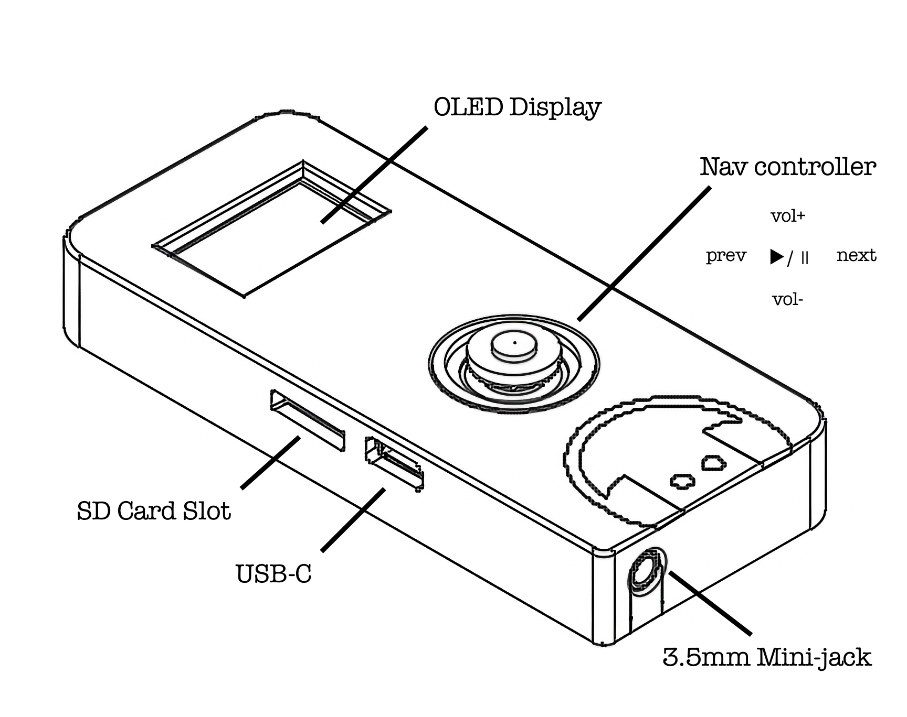

Thank you for "purchasing" the Murmur portable audio player.
This manual reviews the major features and use of your player.
| 01 | Getting Started / SD Card Setup | 3 |
| 02 | Basic Playback Operation | 4 |
| 03 | Playlists & Folder Navigation | 5 |
| 04 | Settings Menu (EQ / Timer / Repeat) | 6 |
| 05 | Audiobook Mode | 7 |
| 06 | Power Management & Charging | 8 |
| 07 | Specifications | 9 |
Format a microSD card as FAT32 using your computer before first use. Murmur supports MP3 files only. Other audio formats will be ignored.
Copy MP3 files to the card. Files can be placed at the root level or inside one level of folders. Deeply nested folders are not scanned.
Insert the microSD card into the slot on the top edge of the unit (label facing up). Press the ▶/|| button (center press on the 5-way nav button). Murmur will display a startup logo and begin playback from the first track automatically.
Plug headphones or a speaker into the 3.5mm jack on the bottom of the unit.
| SITUATION | WHAT HAPPENS |
|---|---|
| No card inserted | Display shows "No SD Card". Murmur waits. Insert card to restart automatically. |
| Card removed during playback | Display shows "SD Removed". Murmur waits for card to be reinserted. |
| Unsupported files | Non-MP3 files are silently ignored. Only .mp3 files appear in playlists. |
| BUTTON | SHORT PRESS | LONG PRESS / HOLD |
|---|---|---|
| ▶/|| (center) | Play / Pause | Hold 3 sec → Power off |
| ▶/|| ×2 | Open Settings menu | — |
| ▶ NEXT | Skip to next track | Open Chapter menu (audiobooks only) |
| ◀ PREV | Go to previous track | Open Playlist menu |
| ▲ VOL UP | Increase volume | Auto-repeats while held |
| ▼ VOL DOWN | Decrease volume | Auto-repeats while held |
Murmur treats each folder on the SD card as a separate playlist. The special "All Songs" playlist collects every MP3 on the card, including files at the root level.
The highlighted row (shown brighter) is the currently selected item.
Scroll with ▲ / ▼
Confirm with ▶/||
Cancel with ◀ PREV
Double-tap ▶/|| to open Settings. Double-tap again or select Exit to return.
Navigate with ▲ / ▼. Change values with ▶/||.
| SETTING | DESCRIPTION |
|---|---|
| FLAT (default) | No equalization applied. Pure, unmodified output. |
| BASS BOOST | Enhanced low-end frequencies. Good for headphones with limited bass response. |
| LOUD | Boosted presence and punch. Suitable for noisy environments. |
Automatically pauses playback after the selected time. Ideal for bedtime listening. Timer always resets to Off when Murmur powers on.
| VALUE | BEHAVIOR |
|---|---|
| OFF (default) | No timer. Playback continues until manually paused or powered off. |
| 30 MIN | Pauses playback 30 minutes after timer is set. |
| 60 MIN | Pauses playback 60 minutes after timer is set. |
| VALUE | BEHAVIOR |
|---|---|
| ALL (default) | Loops the entire playlist continuously. |
| ONE | Repeats the current track indefinitely. |
| OFF | Stops playback when the playlist ends. |
Murmur automatically detects audiobooks by reading the ID3v2 Genre tag. If the genre field of an MP3 contains the word "Audiobook", the file is treated as an audiobook with bookmark and chapter support.
Murmur saves your exact playback position automatically. You will never lose your place.
| ACTION | BOOKMARK IS SAVED |
|---|---|
| Pause playback | ✓ Immediately |
| Switch playlist | ✓ Before switching |
| Power off (hold Play) | ✓ Before entering sleep |
| Battery depleted | ✓ Before shutting down |
When you power on again, Murmur resumes exactly where you left off.
If your audiobook MP3 contains ID3v2 CHAP frames (embedded chapter markers), Murmur can jump directly to any chapter.
| ACTION | HOW |
|---|---|
| Power On | Press ▶/|| briefly. Device starts up and restores last settings. |
| Power Off | Hold ▶/|| for 3 seconds. Display shows power-off message, settings are saved, then device enters deep sleep. |
Murmur has a built-in motion sensor. When the device is set down flat for 2 seconds, the display automatically turns off. Pick it up and the display turns back on immediately. Audio playback is unaffected in either state.
Connect a USB-C cable to charge the internal battery. A lightning bolt icon is displayed while charging.
| STEP | ACTION |
|---|---|
| 1 | Audiobook bookmark and settings are saved automatically. |
| 2 | Playback stops. |
| 3 | A battery icon appears on the display. |
| 4 | Connect USB-C to charge. Device auto-restarts when power is restored. |
| SYMPTOM | CHECK |
|---|---|
| No sound | Is the volume above 0? Are headphones fully inserted? |
| "No SD Card" displayed | Insert card with label facing up. Ensure it is FAT32 formatted. |
| Tracks not appearing | Only MP3 files are supported. Folders are only scanned one level deep. |
| Wrong play order | Prefix filenames with numbers: 01-name.mp3 |
| Audiobook not resuming | Ensure genre tag is set to Audiobook. Bookmark saves on pause/power-off. |
| Display stays off | Pick up device. Display auto-sleeps when flat but resumes on motion. |
| Won't power on | Battery may be depleted. Connect USB-C and wait for auto-restart. |